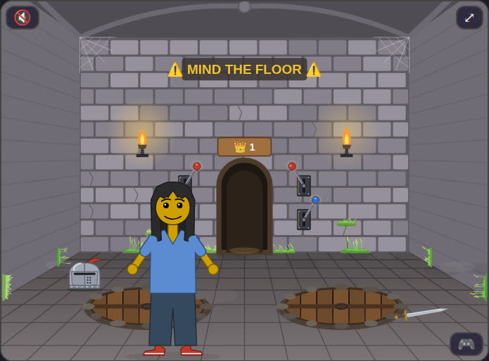
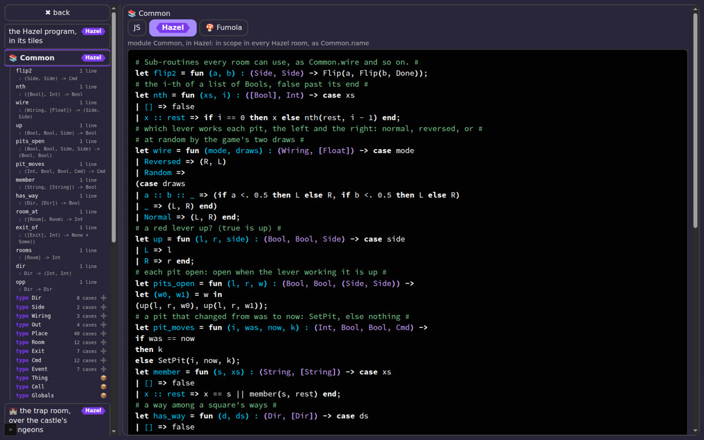

Hazel reports · ^report(32) · Messed Up Dress Up's scripts · 2026-10-23 · work in progress
Scripting, Three Ways, Timed
Matthew: please do a report about loading the game with fumola as default, scrolling to check each script as a speed run; hazel, same speed run
, and Oh, and JS as default too.
(^ticket(588))
Short answers.
- Opening the tab costs nothing for any of the three: Common's box is there 50–70 ms after the tab opens (JS 51, Fumola 67, Hazel 68 ms in the first round; about the same after).
- Fumola is ready in 0.7 s the first time, under 0.1 s after (695 ms, then 92 and 69 ms): the first round fetches and compiles its wasm; later rounds find it in the browser's cache. Hazel's library was already loaded when the tab opened (54–72 ms), as the game loads it at the start when the saved scripts use it.
- Hazel's tiles take about 3.7 s for all six boxes (median; 3.0 to 4.5 s), Common's first at about 2.9 s, then one box after another, as they are now made one at a time. The page keeps drawing while they load: about 58 frames a second.
- The game calling into a script: Fumola's rule answers in about 1.6 ms, Hazel's in about 3.5 ms (medians of 60 lever pulls each). The commands the rule gives then take the game about 9 ms with either, the same work the game's own JS does: a whole pull is 9.7 ms with JS, 10.7 ms with Fumola, 13.7 ms with Hazel. So a rule adds about 1 ms in Fumola and 4 ms in Hazel to an event, under a quarter of a 60 Hz frame.
- But Hazel has one slow event in every round: 0.5 to 0.7 s (502, 692, 519 ms), the first pull after the state is reset, which compiles the program; Fumola's slowest pull is 12–21 ms. That one pause is the thing a player would feel.
- Scrolling through the scripts and visiting each at max size runs at about 58 frames a second in all three, with two or three frames over 50 ms each run; the longest single frames (0.4–1.5 s) come in the first round or the first visit, cold, in every mode, JS included.
- As the code grows, Fumola does not slow down, and Hazel does, then stops. An edit (a definition added to Common) is ready again after about 125 ms in Fumola at every size, up to 16 times Common (728 lines). In Hazel it takes about 360 ms at Common's size, 435 ms at twice, 745 ms at four times; at eight times (184 lines of Common) the game's Hazel build runs out of stack (
Stack_overflow) compiling it, and the rooms go back to their JS. The event itself barely moves with size: about 1.1 ms in Fumola and 3 ms in Hazel at every size that runs.
Try it#
- Play the branch measured here: a preview of Messed Up Dress Up's
script-boxes-566(kids-choice-games at2c93e37). Open the 📜 Scripting tab, choose JS, Hazel or Fumola for every room (or room by room), open ⛶ max size, and walk into the trap room to pull its levers: the rule you chose runs them. Hazel's boxes show Hazel's tiles, which take edits. - The game: Messed Up Dress Up, as published (its
main). The 📜 Scripting tab measured here is not in it yet: it is on the pull requests below. - The game's pull requests, stacked, in matthewhammer/kids-choice-games: #1 (the Scripting panel, the trap room's levers through a Hazel rule), #2 (more of the rooms' rules in Hazel, against plain JS), #4 (the same rules in Fumola, wasm); the three-way boxes, the outline and the tiles in each box are on the branch
script-boxes-566, on top of them. - Hazel's side: hazelgrove/hazel#2711 (Hazel as a JS library: analyze and run programs from any page) and #2719 (Hazel in another page's frame, stacked on it); the tiles that take edits, one module each, are the branch
embed-editable, built at hazel.org/build/embed-editable/ (its#embedpage takes a program only from a page that frames it). - Fumola: fumola.org; the game pins a build of Adapton/fumola with the semantics fixes of Adapton/fumola#151.
From the tab opened to ready#
The median of 3 rounds, each from a fresh page. JS has nothing to load: its boxes show the game's own code at once. Fumola loads its wasm build and defines the rules; Hazel loads its JS library and compiles the program, and then, with the boxes in tiles (the default), makes one frame of Hazel's own app per box, one at a time.
Every measure#
Each a median over the rounds, with the rounds' range in brackets. Times from the tab opened; frame times are the game's own (the gaps between its animation frames), so a frame over 50 ms is one a player can feel.
| measure | JS as default | Fumola as default | Hazel as default |
|---|---|---|---|
| tab open to Common's box | 51 ms (44–60) | 69 ms (67–91) | 67 ms (54–71) |
| engine ready | – | 92 ms (69–695) | 68 ms (54–72) |
| Common's tiles ready | – | – | 2,948 ms (2,772–3,688) |
| TrapRoom's tiles ready | – | – | 3,676 ms (2,948–3,688) |
| TreeRoom's tiles ready | – | – | 3,676 ms (2,998–3,739) |
| Square's tiles ready | – | – | 3,676 ms (2,998–4,541) |
| World's tiles ready | – | – | 3,676 ms (2,998–4,541) |
| Castle's tiles ready | – | – | 3,676 ms (2,998–4,541) |
| loading: median frame | – | 16.7 ms | 16.7 ms |
| loading: 95th percentile frame | – | 166.6 ms | 16.8 ms (16.7–16.8) |
| loading: longest frame | – | 167 ms | 67 ms (50–67) |
| loading: frames over 50 ms | 0 | 0 (0–2) | 1 (1–2) |
| loading: frames a second | – | 22.1 | 58.3 (58.3–59.1) |
| scrolling each box into view: median frame | 16.7 ms | 16.7 ms | 16.7 ms |
| scrolling: 95th percentile | 16.8 ms (16.7–16.8) | 16.8 ms (16.7–16.8) | 16.8 ms |
| scrolling: longest frame | 67 ms (67–1,483) | 83 ms (67–367) | 67 ms (67–67) |
| scrolling: frames over 50 ms | 2 (2–3) | 2 (1–2) | 3 (2–3) |
| scrolling: frames a second | 57.4 (42.3–57.6) | 58.3 (54.8–58.8) | 57.9 (57.9–58.1) |
| visiting each box at max size: median frame | 16.7 ms | 16.7 ms | 16.7 ms |
| visiting: 95th percentile | 16.8 ms | 16.7 ms (16.7–16.8) | 16.8 ms |
| visiting: longest frame | 467 ms (67–533) | 33 ms (17–433) | 100 ms (67–683) |
| visiting: frames over 50 ms | 3 (2–4) | 0 (0–1) | 8 (7–9) |
| visiting: frames a second | 52.4 (51.9–57.9) | 59.8 (54.7–60.0) | 54.4 (47.0–54.6) |
| events: the game's call into the script function (median) | – | 1.600 ms (1.600–1.700) | 3.500 ms (3.500–4.000) |
| events: the script function, 95th percentile | – | 2.600 ms (2.300–4.100) | 6.200 ms (4.700–10.000) |
| events: the script function, longest | – | 2.600 ms (2.300–4.100) | 6.200 ms (4.700–10.000) |
| events: the commands it gave, run by the game (median) | – | 9.100 ms (8.900–9.200) | 9.100 ms (9.000–10.300) |
| events: the whole event, engine to commands done (median) | 9.700 ms (9.100–10.000) | 10.700 ms (10.700–11.300) | 13.700 ms (13.300–14.300) |
| events: the whole event, longest | 11.000 ms (10.600–17.100) | 17.300 ms (12.000–21.100) | 519.200 ms (502.000–691.400) |
| events: a lever pull, at the game's entry point (median) | 9.700 ms (9.100–10.100) | 11.000 ms (10.900–11.600) | 13.900 ms (13.600–14.500) |
| events: a lever pull, longest | 11.200 ms (10.600–17.400) | 17.700 ms (12.200–21.500) | 519.400 ms (502.300–691.600) |
| long tasks (over 50 ms), all phases | 3 (1–3) | 3 (3–4) | 3 |
| long tasks' total time | 534 ms (472–2,007) | 630 ms (562–959) | 1,277 ms (1,248–1,720) |
| the whole run, tab to end | 13,055 ms (12,930–14,226) | 13,112 ms (13,056–13,701) | 17,419 ms (17,295–18,333) |
The game calling into a script#
Matthew: let's include timing for event "event handler", or Game Engine ---calls-into-script---> Script Function
. In each round, after the tab's runs, the trap room's red levers are pulled 20 times, left and right in turn, each through the game's own entry point (roomLeverPull), which hands the event to the room's rule when one runs it (scriptEvent), and to the game's JS when not. The game times each hop itself (hzCounters, 25-scripting.js): the script function alone (the event in, the commands out), the commands then run by the game, the whole event; and, for JS, its own handler. The table's rows starting "events" are these, in milliseconds to the thousandth.
Each engine: the pale bar the whole event (the game's call to the commands done), the dark bar the script function alone (the event in, the rule's answer out). JS's handler is the game's own code, so it has the whole event only. Medians of 60 pulls (three rounds of 20).
What the numbers say#
- One runner, three rounds each, the modes in turn: the range in brackets is the noise between rounds, and the first round is a cold start (empty caches) in every mode. Nothing here is the laptop or a phone; both are slower.
- Hazel's whole run is about 4 s longer (17.4 s against 13.1 s), and its long tasks about twice as long in total (1.3 s against 0.5–0.6 s): the six frames of Hazel's app, each a whole Hazel, loading one after another, and the first event's compile.
- The script function is the hop Matthew asked about (Game Engine → Script Function): the event and the room's state turned into the engine's values, the rule run, its answer turned back into commands (scriptTyped, both ways). The commands themselves (the lever turning, the pits' lids) are the game's, and cost the same whichever engine chose them.
- JS shows no script function: its handler is the game's own code, timed whole (9.7 ms median), which is the baseline for the other two.
As the code grows, and as we edit#
Matthew: Can we project what will happen if the code gets bigger? ... what happens as we edit? Let's measure and plot response to edits that are valid logic edits (how long does the program take to complete the edit and be ready to be responsive)?
Common, made 1, 2, 4, 8 and 16 times its size with renamed copies of its functions, in Hazel and in Fumola. At each size, five edits, each a definition added to Common (a valid logic edit: the program changes, and stays fine), each timed from the change to the rules compiled and ready to answer the next event (the game waits 600 ms after typing stops before it starts this); Hazel's analysis of the whole program, the work its tiles redo after an edit; and one event's script function.
| engine | size | lines | first compile | an edit, until ready (median of 5) | Hazel's analysis | script function, one event |
|---|---|---|---|---|---|---|
| hazel | 1× | 23 | 0.1 ms | 357.5 ms (326.5–476.6) | 260 ms | 3 ms |
| hazel | 2× | 46 | 575.2 ms | 435.4 ms (412.4–566.3) | 302 ms | 2.7 ms |
| hazel | 4× | 92 | 649.1 ms | 744 ms (650.9–952.9) | 428 ms | 3.2 ms |
| hazel | 8× | 184 | not ready after an edit: 248,Stack_overflow,-9 | |||
| hazel | 16× | 368 | not ready at first: 248,Stack_overflow,-9 | |||
| fumola | 1× | 69 | 208 ms | 129.3 ms (114.6–134.5) | – | 1.2 ms |
| fumola | 2× | 112 | 119 ms | 125 ms (119.2–137.3) | – | 1.2 ms |
| fumola | 4× | 200 | 122.4 ms | 120.9 ms (115.4–144) | – | 1.1 ms |
| fumola | 8× | 376 | 122.8 ms | 131.7 ms (119.2–149.7) | – | 1.1 ms |
| fumola | 16× | 728 | 124.8 ms | 124.2 ms (121.4–146) | – | 1.1 ms |
- Hazel's edit time grows with Common (357, 435, 744 ms at 1, 2 and 4 times; one run, five edits each, so the range shown is within a run): roughly linear in the program's length, about 4 ms a line on this runner, before the game's 600 ms typing pause is added. Its whole-program analysis, the work Hazel's tiles redo after an edit, grows the same way (about 250, 300, 430 ms).
- At 8 times (184 lines of Common, 23 functions copied 8 times) Hazel's compile overflows the stack in the library's build (js_of_ocaml), the program reported broken and every room left to its JS; at 16 times it overflows at the first compile. The shape that does it: a long chain of definitions in one module, each a let in the one before's scope. A real script would reach it at a few hundred lines. This is worth a test in the library's own suite (
^ticket(591)) and a look at where the recursion is (statics over a let chain), not a game workaround. - Fumola's edit time is flat (125 to 132 ms medians from 69 to 728 lines): its rules are defined from the whole text each time, and the text's length does not show at this size; the cost is the instance's fixed work, not the program.
- The script function does not depend on the program's size in either engine (Hazel 2.7 to 3.2 ms, Fumola 1.1 to 1.2 ms): an event runs one room's rule, and the copies are never called. What a bigger program costs is the edit and the load, not the play.
- Projection: at Hazel's rate, a script twice today's whole program (about 300 lines) would take about a second and a half to be ready after each edit on this runner, more on the laptop, and would sit near the stack limit; Fumola would stay near an eighth of a second. These are one run's numbers on GitHub's computers: the shape, not the exact values, is the finding.
- A second run agrees on the shape (run 40038452290, a slower runner throughout): Hazel's edits 492, 583, 953 ms at 1, 2 and 4 times, the same stack overflow at 8 and 16 times; Fumola's 158 to 169 ms at every size. The values move with the runner by a third; the shape does not.
The pit room's rule, three ways#
Matthew: let's also show each room with an interesting script, and an example of the three scripts for that room: pit room? include screenshot in report.
The trap room over the castle's dungeons, whose rule has the most to it: a red lever flips, and the pits wired to it open or shut; a blue lever gives a pit its boulder or takes it away.



Its rule, three ways: the game's own JS (the functions the game runs, shown read-only), the Hazel rule and the Fumola rule, each from the run's page, as the game ships them. The Hazel and Fumola rules call Common's helpers (Common.wire, Common.pits_open, Common.pit_moves), and give back commands (Flip, SetPit, LiftBoulder, DropBoulder), which the game then runs, as its JS does directly.
function roomLeverPull(side) { if (side[0] === "B") return roomBoulderPull(side.slice(1)); // (ticket 323: a blue one) if (side === "H") return hatchLeverPull(); // (ticket 334: a tree room's trap door's) if (scriptEvent("TrapRoom", { tag: "Pull", value: side })) return; // (ticket 482: 📜 Scripting's rule for the trap room, when it is on) hzJs("Pull", () => roomLeverFlip(side)); // (ticket 531: timed as the rule is) } function roomLeverFlip(side, lids = true) { const B = state.background; if (B.kind !== "castleroom") return; const K = castleOf(B), n = Math.max(1, Math.min(K.rooms.length, Math.round(B.castleRoom ?? 1))), key = leverKey(side, n, K.id); const was = trapState(B, n, K.id).open; B[key] = !leverDown(B, side, n, K.id); // (ticket 307: never touched, it was down) changed(); const up = !B[key], sd = side === "L" ? -1 : 1, T = trapState(B, n, K.id), now = T.open; turnArm(`[data-lever="${side}"] .lever-arm`, (up ? 1 : -1) * sd * LEVER_TILT, LEVER_TURN * 100 / T.speed.lever); // (ticket 328: the room's speeds) if (!lids) return; for (const j of [0, 1]) if (now[j] !== was[j]) lidSwing(`.pit-lid[data-pit-i="${j}"]`, now[j], PIT_SWING * 100 / T.speed.lid); // (ticket 307) // (Matthew: "opened by the red lever (trap door) while standing on it, and no falling sequence was triggered") a pit opened // under the friend: in they fall, as walking onto it does, once its lid has swung most of the way if (now.some((o, j) => o && !was[j])) setTimeout(fallIfOverPit, 0.6 * PIT_SWING * 100 / T.speed.lid); } function roomBoulderPull(side) { if (scriptEvent("TrapRoom", { tag: "PullBoulder", value: side })) return; // (ticket 531: 📜 TrapRoom's rule, when it is on) hzJs("PullBoulder", () => { const B = state.background; if (B.kind !== "castleroom") return; const K = castleOf(B), n = Math.max(1, Math.min(K.rooms.length, Math.round(B.castleRoom ?? 1))); // (ticket 338) the pits this lever works: a fallen rock still on any, lifted away (each rising, and gone from the place's // things); else into each a new rock falls, which once landed is a placed rock, "fallen N", dragged where one likes const T0 = trapState(B, n, K.id), mine = [0, 1].filter(j => T0.wire[j] === side && T0.on[j]), lift = mine.some(j => T0.covered[j]); roomBoulderAct(side, mine, lift); }); }
# A red lever pulled: flip it, and each pit wired to it opens or shuts. # # A blue lever pulled: each of its pits gets a boulder, or loses one. # let on_event = fun (g, e) : (Globals, Event) -> let w = Common.wire(g.wiring, g.draws) in let (w0, w1) = w in case e | Pull(side) => let (was0, was1) = Common.pits_open(g.lever_L, g.lever_R, w) in let l = if side == L then !g.lever_L else g.lever_L in let r = if side == R then !g.lever_R else g.lever_R in let (now0, now1) = Common.pits_open(l, r, w) in Flip(side, Common.pit_moves(0, was0, now0, Common.pit_moves(1, was1, now1, Done))) | PullBoulder(side) => let mine0 = w0 == side && Common.nth(g.pits_on, 0) in let mine1 = w1 == side && Common.nth(g.pits_on, 1) in let lift = (mine0 && Common.nth(g.covered, 0)) || (mine1 && Common.nth(g.covered, 1)) in let one = fun (i, mine, k) : (Int, Bool, Cmd) -> if !mine then k else if lift then LiftBoulder(i, k) else DropBoulder(i, k) in one(0, mine0, one(1, mine1, Done)) | _ => Done end
module TrapRoom { // a blue lever's pit i: nothing if not its own, else its rock lifted or a rock dropped func one(i : Int, mine : Bool, lift : Bool, k : Common.Cmd) : Common.Cmd { if (not mine) { k } else if (lift) { #LiftBoulder(i, k) } else { #DropBoulder(i, k) } }; // A red lever pulled: flip it, and each pit wired to it opens or shuts. // A blue lever pulled: each of its pits gets a boulder, or loses one. public func on_event(g : Common.Globals, e : Common.Event) : Common.Cmd { let w = Common.wire(g.wiring, g.draws); let (w0, w1) = w; switch (e) { case (#Pull(side)) { let (was0, was1) = Common.pits_open(g.lever_L, g.lever_R, w); let l = if (side == #L) { not g.lever_L } else { g.lever_L }; let r = if (side == #R) { not g.lever_R } else { g.lever_R }; let (now0, now1) = Common.pits_open(l, r, w); #Flip(side, Common.pit_moves(0, was0, now0, Common.pit_moves(1, was1, now1, #Done))) }; case (#PullBoulder(side)) { let mine0 = (w0 == side) and Common.nth(g.pits_on, 0); let mine1 = (w1 == side) and Common.nth(g.pits_on, 1); let lift = (mine0 and Common.nth(g.covered, 0)) or (mine1 and Common.nth(g.covered, 1)); one(0, mine0, lift, one(1, mine1, lift, #Done)) }; case _ { #Done } } } }
The same answers, three ways#
Matthew: what can we say about our CI tests for 3-way functional correctness in this doc?
Speed means nothing if the
rules disagree, so the game holds Hazel's and Fumola's rules to its own JS on every push. Its test workflow has a step
The rules three ways, JS = Hazel = Fumola (^ticket(567)), with no browser, node
only, and two checks:
- Hazel against the JS:
tools/hazelrules531.mjsloads the Hazel library the game loads (js-library-embed, build0d66c36618) and the game's own25-scripting.js, and builds the program as the page does. It gives every room'son_eventevery case the game can give that room, and compares the commands that come back with what the game's JS does in the same case: 32,761 comparisons. - Fumola against the same expectations:
tools/fumola_rules_check.mjsloads the game's pinned Fumola wasm build (877b155851, the one the page loads) and the page's own25-fumola.js. It feeds the handlers the cases from the same case makers, and holds the answers to the expectations Hazel is held to, so Fumola must also give Hazel's answers. It runs in both of the page's Fumola modes (the World map held in Fumola, and passed in), adds edge cases written out one by one, and calls Common's helpers alone: 20,649 comparisons.
Reading the table. A case is one situation a room can be in (its globals) and one event; a comparison is one answer checked against the JS's answer for that case. Each Hazel case is one call, so its cases and its comparisons are the same number. Fumola's page has two modes (the World map held in Fumola, or passed in with each event), and every Fumola case is asked in both, so it makes two comparisons; Common's helpers are called once, outside either mode. A few checks are not calls at all (the program compiles; the boundary refuses what it cannot write), and count one each. The last row adds each column up to the totals in the text above.
| what is compared | Hazel: cases (= comparisons) | Fumola: cases | Fumola: comparisons (cases × modes) | the JS's answer comes from |
|---|---|---|---|---|
| the trap room's red and blue levers | 2,304 | 2,304 | × 2 = 4,608 | trapWiring, the game's own (01-state.js), with its seeded draws (10-nature.js); the levers' outcomes restated from their few lines of JS |
| the tree houses' and round room's hatches | 14 | 14 | × 2 = 28 | restated from the hatch lever's JS |
| placed levers and their trap doors | 108 | 108 | × 2 = 216 | the game's own leverPull and leverPullApply (26-drags-and-start.js), on a stand-in square |
| the castle's pits, where a fall lands | 1,560 | 1,560 | × 2 = 3,120 | the pits line as castleroomScene draws it |
| ways out of a room | 26,478 | 3,978 | × 2 = 7,956 | the game's own wayOutOf, the 12 room kinds read from ROOM_KINDS |
| the world's ways, square to square | 2,296 | 2,296 | × 2 = 4,592 | the game's own worldMeets |
| edges named one by one, commands written out | — | 41 | × 2 = 82 | written in the check |
| Common's helpers called alone | — | 42 | × 1 = 42 | written in the check |
| the program is ready (compiled, no errors) | 1 | not a call: checked once | ||
| the Fumola source is ASCII; the list mode holds no map; a text with a quote is refused; literals written as the page writes them | 5 | not a call: checked once | ||
| comparisons in all | 32,761 | 20,649 |
Where the game's JS can run in node, the expected answer is that code itself, not a copy of it: the wiring
(trapWiring), the placed levers (leverPull), the ways out (wayOutOf), the world's ways
(worldMeets). Only the red, blue and hatch levers' outcomes are restated in the check, from their few lines of JS.
The step is allowed to fail so that the rest of the run still goes ahead, and a last step then fails the run if the rules
disagreed. A difference shows as a red run on the branch, after the pictures and the other checks have run.
In the browser, two more checks play the same events in real pages and compare the game's state afterwards:
tools/checks/hazellogic531.mjs (?logic=js against ?logic=hazel) and
tools/checks/fumola542.mjs (against ?logic=fumola and ?logic=fumola-list). They cover the
trap room wired at random, the hatches, a room of placed levers, the pits under four lever settings, the dungeons' ladders, and a
world walked as a player walks it. They run with the branch's other checks on GitHub.
Where it stands: at the game's 370f532, the three-way step passed on GitHub
(run 40053184542), and both checks print all ok when run in node on the laptop at
the same commit (their output beside this report: Hazel, Fumola).
Earlier runs on the branch were cancelled by the pushes that followed them, so this is the first one to reach that step since the
outline work.
What it does not cover:
- It checks the rules as the game ships them, not a box someone has edited. An edit is checked only by the game running it.
- Fumola's check has fewer ways-out cases than Hazel's (3,978 against 26,478), on purpose. The Fumola check leaves out the castles of 4 rooms that Hazel's takes (it covers every castle of 1 to 3 rooms, and two long ones): with them it made about 25,000 more calls and ran a minute longer, and the rule reads a castle only through two helpers (index_of and nth_s) that the shorter castles already reach. A choice for speed, written in the check (tools/fumola_rules_check.mjs), not a gap found by it.
- Its times are node's, kept only to show the order of things; the speeds in this report are the browser runs above.
- It does not reach the sizes where Hazel overflows its stack (As the code grows).
The same cases are the seed for unit tests in Hazel's library itself (hazelgrove/hazel#2711,
^ticket(591)), so that the library keeps giving these answers, not just this game.
What next#
- Find the recursion behind Hazel's stack overflow on a long module (statics over a chain of lets, in the js_of_ocaml build), fix it on the library's branch (#2711), and add the 8x program as a test (
^ticket(591)). - Find and remove Hazel's first-event pause: compile the program when the tab opens or the scripts change (the game already compiles ahead under ?logic=hazel), not on the first lever pulled; then measure the first pull again.
- Measure the same on the laptop and on the iPad, by hand from the game's 🔬 timings once
^ticket(568)shows them, against these runner numbers. - Time the other rooms' events (the world's ways, the castle's pits, placed levers), whose rules do more than the trap room's; the World rule on a big map is where
^report(30)found Hazel slow. - Re-run after
^ticket(587)(the outline from Hazel) and with Hazel's tiles loaded on demand only, to see what the tiles cost the tab.
How this was put together#
The check tools/checks/scriptspeed588.mjs (kids-choice-games), run on GitHub's computers (no test browsers run on the laptop) on a branch carrying only it: diag-588, the game at d2ccd0a (diag-588, on script-boxes-566 430fc14) (the script-boxes-566 branch, with the tiles made one at a time), run 40034928882, GitHub's ubuntu-latest runner, Chrome headless. Hazel's tiles came from hazel.org/build/embed-editable/ as it was then (embed-editable, b029bbd1de or cb77919b10 (published 16:20)); the levers' Hazel from js-library-embed.
Each round: a fresh page; the game's state reset; every room's default set to one engine (Hazel's boxes in tiles); the 📜 Scripting tab opened; the time until Common's box is there, until the engine is ready, and, with Hazel, until each box's tiles say ready; then each script box scrolled into view in turn, 600 ms each; then each box opened at max size from the outline, 600 ms each. The game's animation-frame gaps are recorded for each phase, and the long tasks (over 50 ms) throughout. Rounds in the order JS, Fumola, Hazel, three times. A single runner, so the noise between rounds is the range shown; the runner is not the laptop, and a phone is slower again.
The data#
- The numbers, for programs too: every table in this report, and what its numbers measure, is also in this page as JSON, in its
<script type="application/json" id="report-data">element, so a reader or an agent that fetches the page alone has the dataset. The same, with any raw files that survive, is in032/data/.